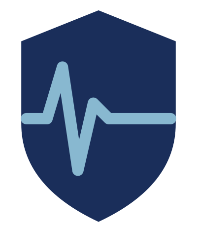

// BSc Computing Graduate
|
BSc Computing Graduate (First Class Honours) @ National College of Ireland · Specialising in Cybersecurity · Available Now.
I'm a recently graduated Computer Science student at National College of Ireland with a strong interest in cybersecurity, IT support, and security operations. Growing up surrounded by technology sparked a curiosity that turned into a career path.
During my placement at Dublin City Council's Planning IT Department, I worked alongside enterprise IT teams - imaging and deploying 80+ devices, managing Active Directory, configuring secure remote access, and resolving 400+ support tickets via the Alemba INFRA system.
I built ChronicPal, a security-first healthcare platform, as my final year project, achieving 81%. Drawing on knowledge built across four years - including secure application development, penetration testing concepts, and independent research into security best practices such as OWASP - to design and deliver a platform with real-world security controls.
name = "Aaron Goslin"
location = "Dublin, Ireland"
degree = "BSc Computing (Hons)"
college = "National College of Ireland"
specialisation = "Cybersecurity"
grade = "First Class Honours (1.1)"
availablity = "Available now"
interests = ["Cybersecurity", "IT Support", "SOC Analysis", "Penetration Testing"]
_

A security-first healthcare platform for chronic illness management.
Tested with OWASP ZAP, Jest unit tests, Postman API tests, and manual security testing.
Two versions of the same blog application - one intentionally vulnerable, one fully hardened. Demonstrates SQL injection, XSS, CSRF, weak session handling, and how each is mitigated. Includes Selenium end-to-end tests and audit logging.
A dynamic meal planner integrating the Edamam API. Users can search recipes, calculate body metrics, and save data with account creation.
Full-stack event booking and management system with a decoupled Rails API backend and React frontend. Features CRUD, capacity validation, ActionMailer confirmation emails, RSpec tests, and CI/CD with security scanning via Brakeman and RuboCop. Deployed on Netlify and Render.
Digitally sign and verify documents using SHA-256 and RSA encryption, ensuring authenticity, integrity, and non-repudiation.
ML project featuring housing price prediction with Linear Regression and NBA All-Star classification using Logistic Regression and K-NN.
Relocated independently to Chicago for a summer J1 programme. Demonstrated adaptability, confidence, and strong communication in a fast-paced public-facing role.
Specialised in Cybersecurity in final year. Graduated 2026 - First Class Honours.
Relevant Modules
I'm actively looking for opportunities in IT and cybersecurity - available now. With 7 months of hands-on enterprise IT experience at Dublin City Council and a First Class Honours degree in Computing, I'm ready to begin my professional career and contribute to a team from day one.
Download CV ↓